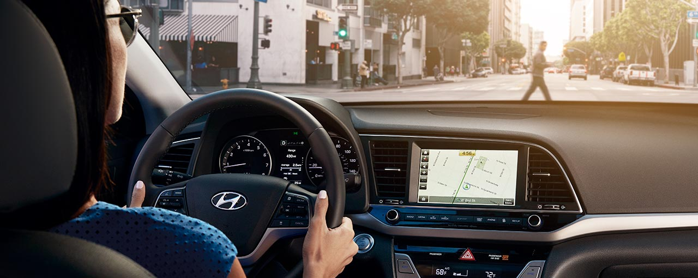

AUTOMATIC EMERGENCY BREAK

Automatic braking technologies combine sensors and brake controls to help prevent high-speed collisions. Some automatic braking systems can
prevent collisions altogether, but most of them are designed to simply reduce the speed of a vehicle before it hits something. Since high-speed
crashes are more likely to be fatal than low-speed collisions, automatic braking systems can save lives and reduce the amount of property damage
that occurs during an accident. Some of these systems provide ??braking assistance to the driver, and others are actually capable of activating the
brakes with no driver input.
Each car manufacturer has its own automatic braking system technology, but they all rely on some type of sensor input. Some of these systems use
lasers, others use radar, and some even use video data. This sensor input is then used to determine if there are any objects present in the path
of the vehicle. If an object is detected, the system can then determine if the speed of the vehicle is greater than the speed of the object in front of
it. A significant speed differential may indicate that a collision is likely to occur, in which case the system is capable of automatically activating
the brakes.
In addition to the direct measurement of sensor data, some automatic braking systems can also make use of GPS data. If a vehicle has an accurate GPS
system and access to a database of stop signs and other information, it can activate its auto brakes if the driver accidentally fails to stop in time.